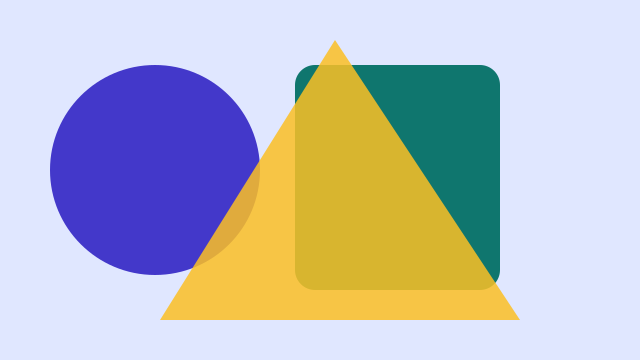
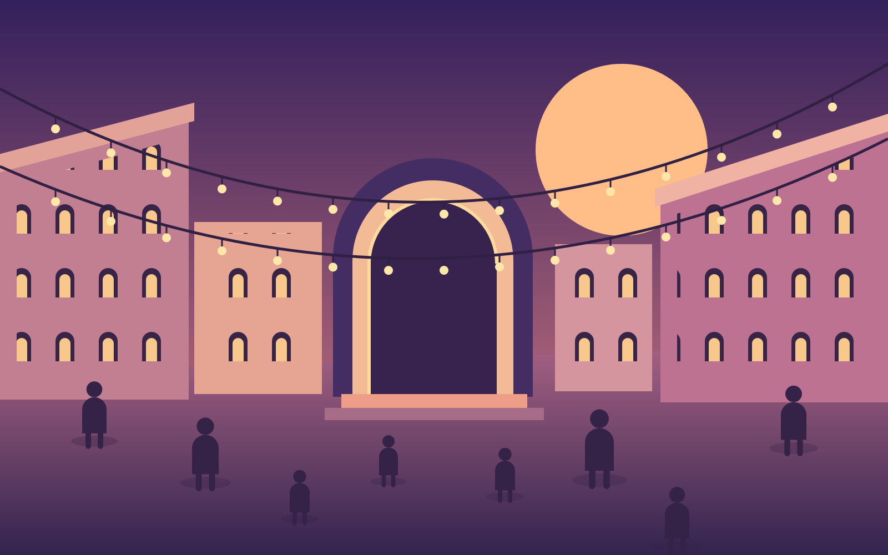

Destacada
Taller de cartells
Crea un cartell a partir de formes, colors i tipografia.
10:00 · Aula creativa
Com arribar a aquesta activitat15 DE MAIG DE 2027 · ENTRADA GRATUÏTA
Un dia per eixir al carrer, descobrir nous talents i trobar-nos. Art, música i moltes ganes de fer plaça.

COMENÇA A FER PLANS

Crea un cartell a partir de formes, colors i tipografia.
10:00 · Aula creativa
Com arribar a aquesta activitatDescobreix les obres i les històries del barri.
11:00 · Punt de trobada
Com arribar a aquesta activitatComparteix un fragment del teu llibre preferit.
12:00 · Biblioteca
Com arribar a aquesta activitatLA PLAÇA ÉS DE TOTES I TOTS
Quan cau la vesprada, el barri s’ompli de llum, converses i música. Vine a formar-ne part.
Ens veiem al concert